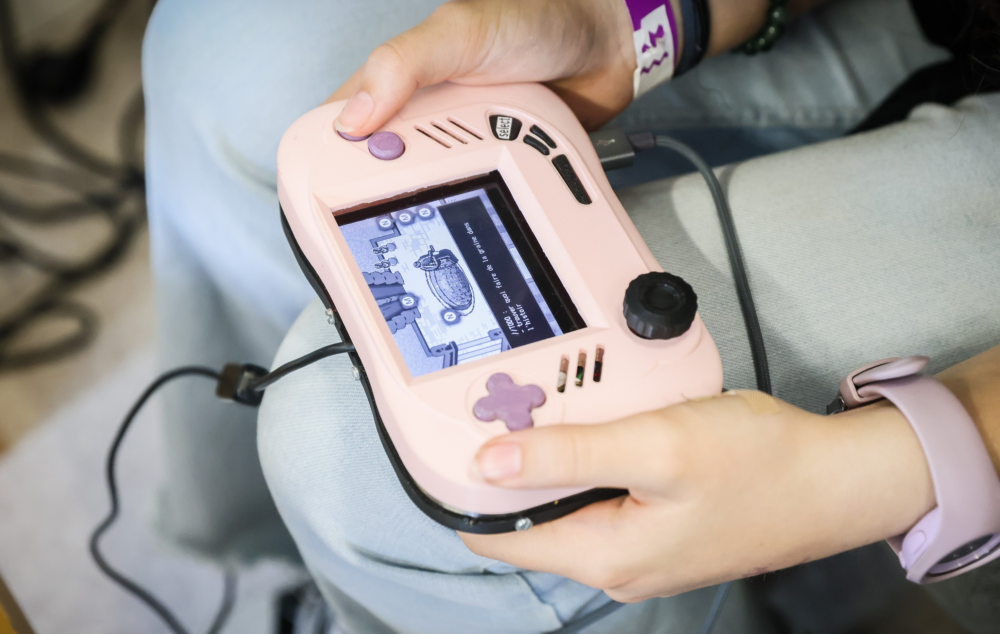
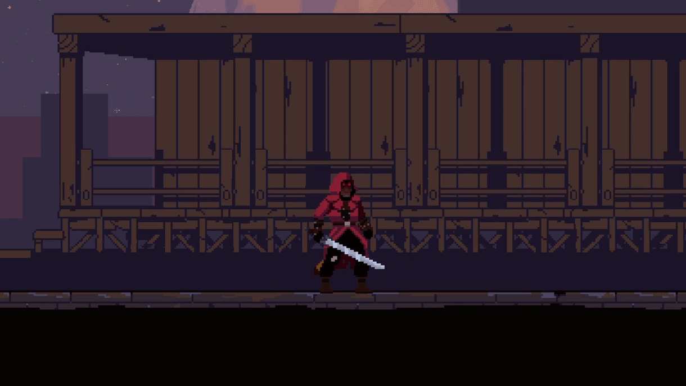
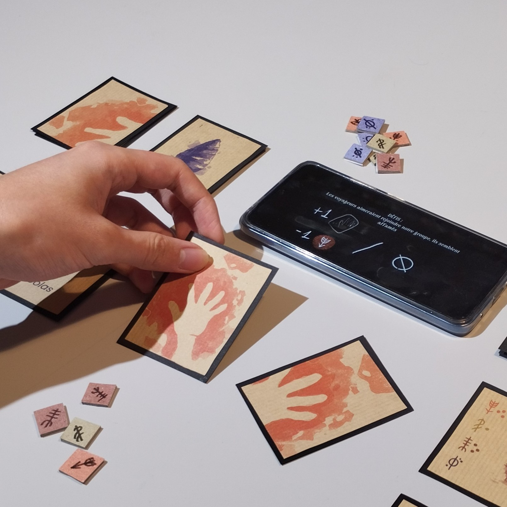
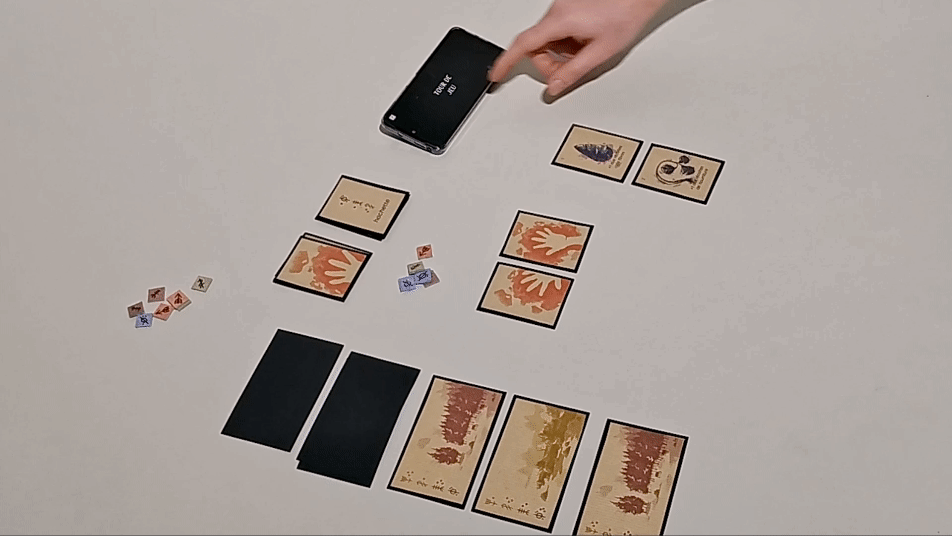
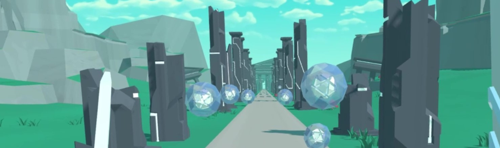
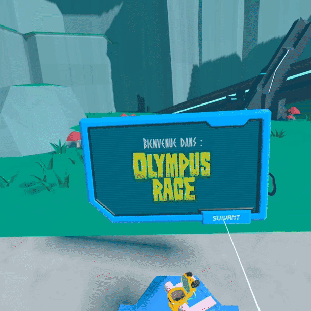
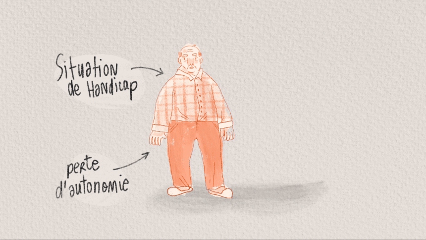

TimeWeaver
Réalisé au cours de mon M1 à l’Enjmin, TimeWeaver est une expérience se jouant sur une console portable que nous avons conçue et réalisée. En réparant peu à peu l’objet et le jeu se trouvant à l'intérieur, le joueur explore et découvre l’histoire d’un studio de développement fictif se déroulant dans les années 2000.


Artisan Meurtrier
Animation de personnages, conception et développement d'une démo d'un jeu de combat basé sur l'univers du livre du commanditaire.


Nomades
Jeu solo alternatif réalisé dans le cadre d'un travail de recherche sur les expériences ludiques hybrides.
Vous incarnez une tribu nomade du Paléolithique et avez pour objectif d’explorer les environnements qui vous entourent,
de développer votre groupe en fabriquant des objets et de survivre aux différents défis rencontrés.


Olympus Race
Jeu de rythme en VR conçu et réalisé dans le cadre d'un stage en salle d'arcade.


le baluchonnage
Conception d'une expérience interactive explorant les relations entre espace, perception et comportement utilisateur.
Artisan Meurtrier
Conception d'une expérience interactive explorant les relations entre espace, perception et comportement utilisateur.
Artisan Meurtrier
Conception d'une expérience interactive explorant les relations entre espace, perception et comportement utilisateur.
Artisan Meurtrier
Conception d'une expérience interactive explorant les relations entre espace, perception et comportement utilisateur.